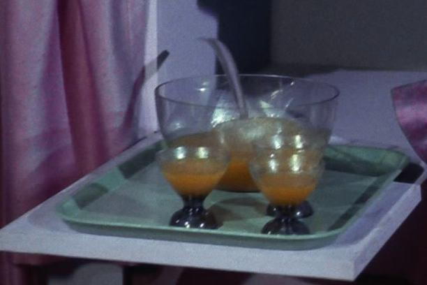

Lasagna

Description
This is a special lasagna recipe - the result looks like tranya from Star Trek's Corbomite Maneuver but when consumed it tastes exactly like a classic Italian lasagna.
Ingredients
- 12 tranya berries
- 3 ripe tomatoes
- ½ pound ground beef
- 1 pound shredded mozzarella cheese
- 1 package lasagna noodles
Steps
- Cook lasagna noodles according to package directions
- Peel tranya berries
- Put tomatoes in plastic bag and smash against the counter
- Brown ground beef in saute pan, then add tranya berries and tomato
- Place one layer of lasagna noodles in a lasagna or similarly sized pan
- Layer the filling and spread mozzarella cheese on top, then repeat until pan is filled
- Finish with one last layer of cheese
- Bake for 15 minutes in a 450°F oven